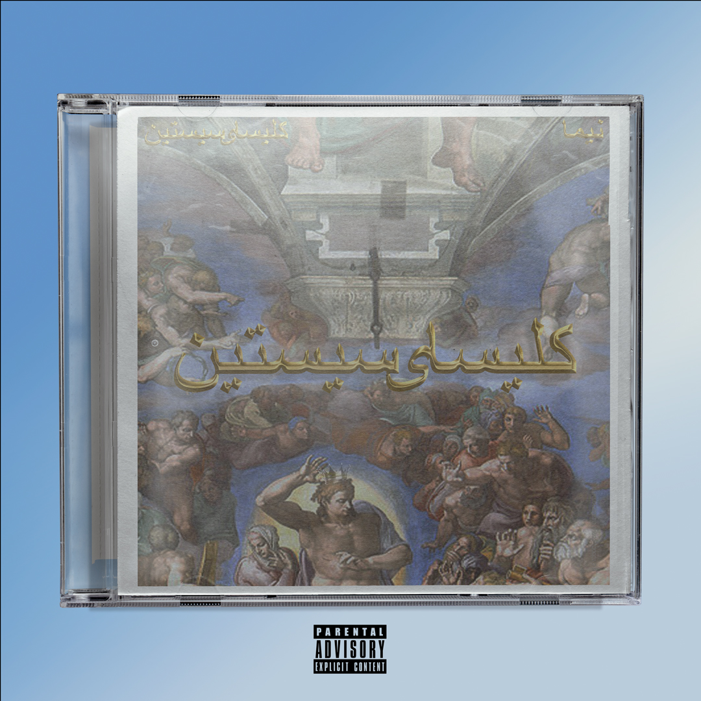

Cover art for Nima's (@nimam__) upcoming single, "Sistine Chapel". The CD case encapsulates the album cover
and was layered and edited in Adobe Photoshop.

Cover art for Tyler Miller's (@tylermillermusic)
upcoming single, "Divine". The composite depicts a rose with vibrant blue neon highlights,
which represents the tone of the song. This digital art piece was created using a collection of images in
Adobe Photoshop.